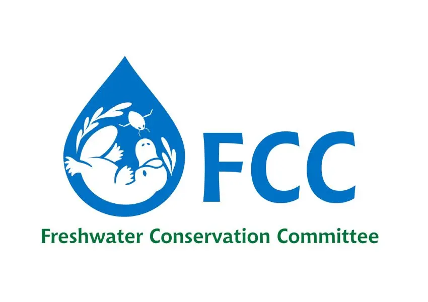

Global Community
Partners
Organizations helping build a connected global community for springs conservation.

Springs Stewardship Institute
Visit website ↗

Re:wild
Visit website ↗

Saint Louis Zoo
Visit website ↗

SHOAL
Visit website ↗

IUCN SSC Freshwater Conservation Committee
Visit website ↗
Our community is growing. Additional partners will be added as the Alliance develops.